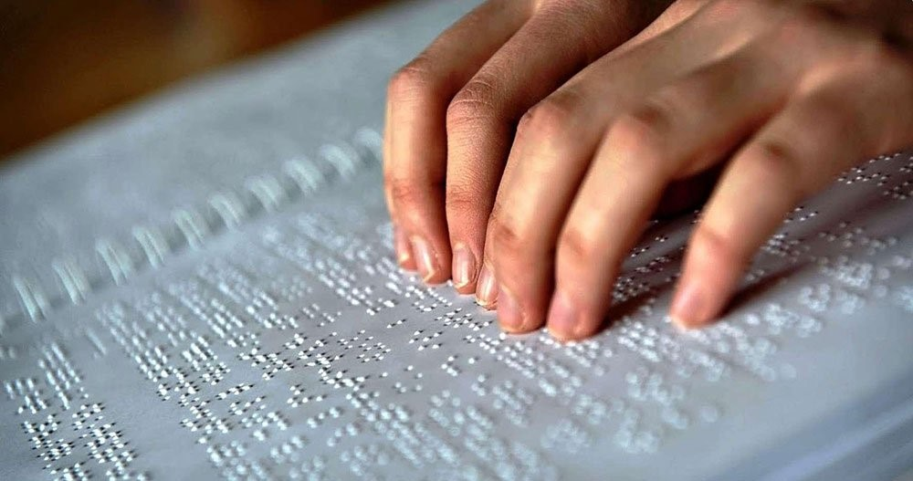

Bajo esta sección encontraras tres recursos útiles para cuestiones de acceso y que no pueden faltar en una Biblioteca Escolar.
Internet es una red informática universal que utiliza la línea telefónica con el fin de transmitir la información. Es una poderosa herramienta para ayudar la difusión de la información, el conocimiento y la educación. Asimismo, es una de las mayores fuentes de información disponibles. Estamos en la era de la comunicación y el conocimiento, de ahí la impronta de esta red de redes, que se extiende hasta los confines del mundo, reduciendo notablemente el tiempo y esfuerzo en la búsqueda de la información.
Cartel en braille con los horarios de atención de la Biblioteca Escolar y también una Presentación de mapas ópticos, que permiten a las personas no videntes o con visión reducida conducirse y desplazarse en las distintas áreas de la unidad de información. Las mismas deberán ser de un material más resistente, y perdurable que el papel, para garantizar mejor su durabilidad en el mobiliario.
Aunque no es un recurso desconocido en los albores del Siglo XXI, muchas bibliotecas escolares aun no tienen ordenadores. Es necesario contar con computadoras, preferentemente de escritorio, para que los usuarios puedan acceder a la información digital a través del uso de esta herramienta. Por su mayor convergencia entre los sectores de la informática, la información y la educación, es imposible no saber los grandes beneficios que otorgan su utilización e introducción en las unidades de información. “El ordenador se ha convertido en un habitante más dentro del hábitat cultural. Ayuda a satisfacer necesidades, procesar rápidamente grandes cantidades de datos y ofrece nuevas posibilidades de obtener, conservar y difundir cultura e información” (Forufe, 1996, p. 2)